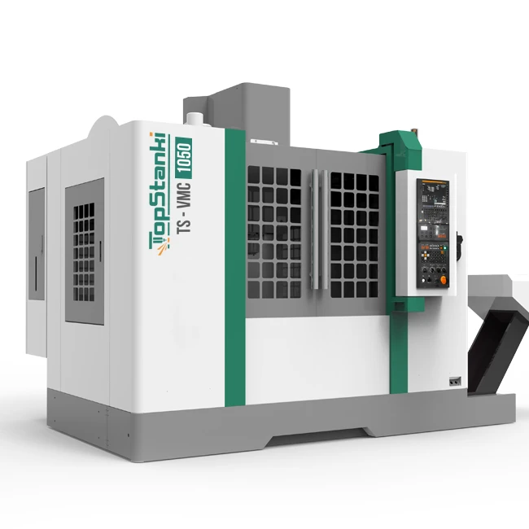

Каталог промышленного оборудования
От идеи
до детали.
Выберите, что хотите сделать: вырезать контур, согнуть лист или изготовить деталь. Покажем, какие станки подходят.

Что хотите сделать?
Все позиции ↗Резать металл
Лазер вырезает детали по контуру, как плоттер, только по металлу.
Гнуть лист
Из плоского листа можно получить уголок, короб или корпус.
Делать детали
Из заготовки удаляют лишний материал, пока она не примет нужную форму.
Работать с деревом
Раскроить плиту, сделать рельеф, просверлить отверстия или закрыть край.
Работать с камнем и формами
Делать рельефы на камне и обрабатывать заготовки для производственных форм.
Сваривать и очищать
Соединять детали или удалять ржавчину и другие загрязнения с поверхности.
Оснастить мастерскую
Подобрать охлаждение, вытяжку, подачу листа, запчасти и опции.
Гид для начинающих
Как выбрать
станок
Начните с того, что вы хотите получить из заготовки.
Спросить специалиста ↗1. Определите задачу
Чтобы вырезать плоский контур из металла, смотрите лазерные станки. Для круглой детали вроде втулки подойдёт токарный. Для пазов и рельефов смотрите фрезерные.
2. Запишите материал и размеры
Укажите материал, габариты и толщину заготовки. Рабочее поле — это размер участка, в пределах которого станок может обрабатывать заготовку.
3. Проверьте требования к мастерской
Уточните место, питание, вентиляцию, ограждения и подготовку оператора. Для учебной мастерской согласуйте выбор с преподавателем и ответственным за безопасность.
Что означают ЧПУ, АТС и VMC?
ЧПУ — управление движениями станка по программе. АТС (ATC) — автоматическая смена инструмента. VMC — вертикальный обрабатывающий центр, у которого инструмент расположен вертикально.